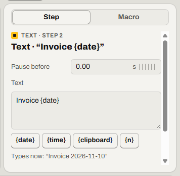

The full spec.
Everything Relay 2.0 does, on one plate.
RELAYMacro recorder for Windows 10 and 11v2.0.0
Record
| Captures | Clicks, double clicks, drags, scrolls, keys, typed text |
| Screens | Every monitor, any display scaling |
| Positions | Screen, or relative to the window |
| Start, stop | Ctrl Shift F9, Esc |
Edit
| Steps | Click, Drag, Scroll, Keys, Type, Wait, Wait for pixel, Find image, Text |
| At once | Select several, change or delete them in one go |
| Mouse paths | Smooth, straighten, fold into their click |
| History | Undo and redo every edit; a trash to restore |
Wait for the screen
| Pixel | A color, picked with a loupe, with a time limit |
| Image | Found anywhere, at 0.5× to 2× its size, then clicked |
Text
| Placeholders | {date} {time} {clipboard} {n} {col:Name} |
| Data files | CSV: plays once per row |
| Layouts | Types the same on any keyboard layout |
Triggers
| Hotkey | From any app |
| Schedule | Days of the week and a time |
| Every… | 5 seconds to 24 hours |
| Watches | An app starting, a pixel changing, an image appearing |
Playback
| Speed | 0.5×, 1×, 2×, 4× |
| Repeat | Once, N times, forever, or once per data row |
| Timing | About 1 ms accurate; varied by ± ms on request |
| Show targetsNEW | Marks where each click lands; every target at once |
Safety
| Stop | Esc, any key, or the kill switch |
| Keys | Nothing is ever left pressed |
| Activity | The last 200 runs, problems counted |
Files
| Macros | .rly (JSON), import and export |
| Export as | Standalone .exe, AutoHotkey v2 script |
Network none, everLook light, dark, text to 200%Install per user, no admin; or portableLicense MIT

